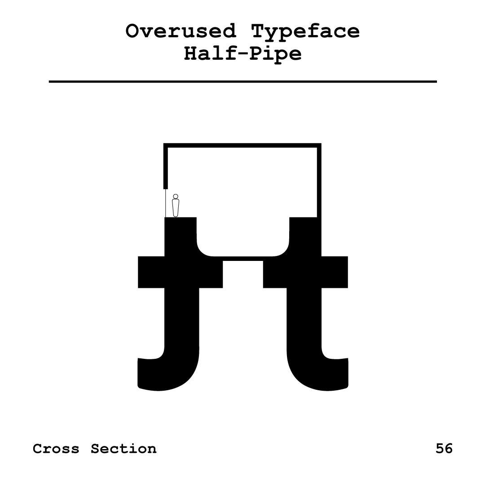
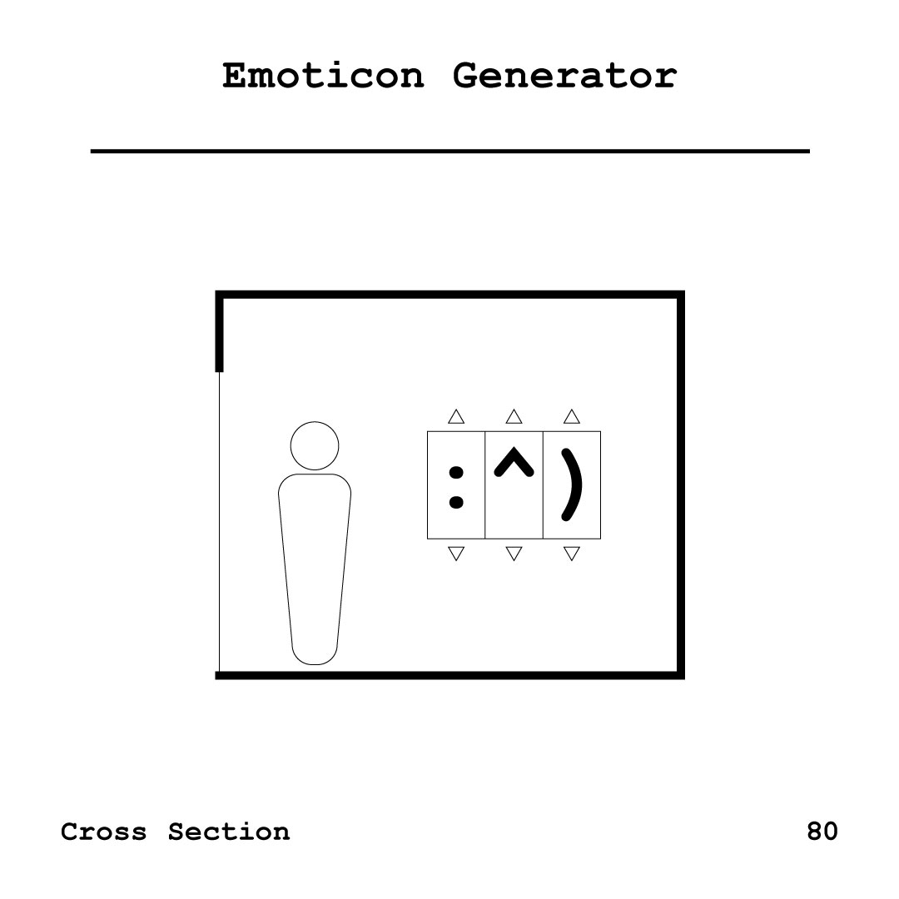
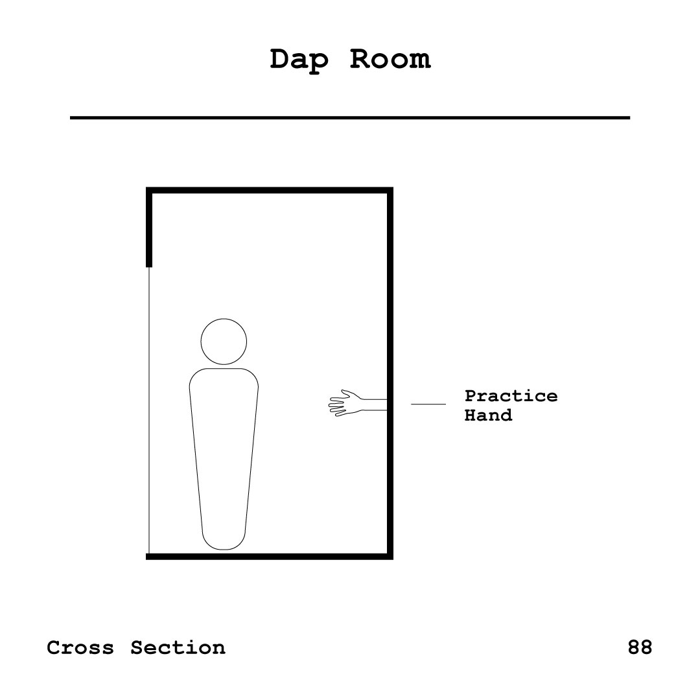

Humidity controls added to elongate and shorten contests. Maximum capacity of 2.Massive type only screen, set on tracks to gauge success of kerning pairs from a distance.Mirrors have been installed to cover all walls, providing an authentic viewing experience.White noise speakers have been added to maximize unintentional collisions. Live camera setup for observing all collisions.Oversized stairwell eliminates scuffs on walls, and angry landlords.Our model doesn't have pants but you get the idea.A single, slightly slack strand of floss runs across the room. Replaceable as user sees fit.Streamlining the tedious task of brushing your teeth. Let the oscillating toothbrush do the heavy lifting.NOTICE: This room is only accessible between 2–5am.Push the button, get a paper ball.ATTENTION: Due the budget overruns from previous rooms, this room's opening has been delayed for a later date.A harmless area for subway performers to perfect their tricks and flips.Good fun, just the way Sandy intended.The game you never win.“Studies show that it is a sign of intelligence to often step onto a rake, propelling the handle upward and hitting you in the face.” —@asshatlogicTest your split skills; see if you stack up to legend himself.Why should your thumb have all the fun? Put your whole body into it.Hold the door, chivalry lives.Get humbled by the man that has more cars than you have friends.Every vote counts, but now it can really count.Practice new languages without being embarrassed by your native speaking friends.1. Walk into room and place $20 on the ground. 2. Engage memory wipe and leave room. 3. Re-enter and enjoy your newfound luck.Don't look down.Enter a world where the worst part of the muffin doesn't exist.The only way to ride. Watch the lights fly by.Track fast, watch fast.Put your money in the slot! Nobody's ever won, but you might.Learn to dodge pedestrians with the skill of a true city slicker.Send messages back and forth with your friends. Pen and paper included.Step on the wheel, and become a combination of the two greatest animals.Never miss a step thanks to the room that moves you.“Ever go to tie your shoes and notice the ends of the laces are wet? ...You go the public bathrooms? You stand at the urinal?” —PaulieCheetos. Rinse. Repeat.The most in depth NYC chemical analysis to date. Available for use in certain universities.380 2nd Avenue, floor 8.Dedicated to replicating the experience of interacting with his works. Costs less too.So you don't get any surprises hours later.Stop trying to use your weak upper body, now you can step on the pump with the strong legs cycling gave you.Skip the knife, just quickly run your bread through the butter waterfall. The slower you go, the more butter you get.Get your 45° right. For safety razor users only.For both boogie and woogie.Guaranteeing twice the food, thanks to 500 year old technology.The walls are aligned, now do the wheel.You can't waste time when there's no time.Perform karate's most coveted technique. No experience needed.Distractions such as small chatter are now replaced with a single ear piercing tone.Note: All design decisions for this room were informed by google images.1: Place your toes in the slot 2: Move the hand pump up and down 3: Enjoy the heatGod LevelThe room that's already a reality.“If struck between 2 choices, flip a coin. While the coin is in mid-air you'll know which option you want”Get it?No longer will you rub your hands together like some neanderthal. Simple place your hands on the block and warm up using the same friction from your old ways.As you pedal, the platform rotates. This creates a similar effect to watching one of these networks.No distractions.

Call it repurposing.1. Hold a slice of bread in each hand. 2. While holding them parallel to the floor, gently dab each slice in its respective vat. 3. Combine.Replacing the three tap, now offering a slightly more efficient method.Any changes in atmospheric pressure, the alarm goes off. Every house has these for some reason.“The corner is, it was and it always will be the poorman's lounge. It's where a man wants to be on a hot summer's night. It's cheaper than a bar.”Located fifty miles from the nearest human, this room prevents any embarrassing observation. It also lacks any lighting so you can't see yourself either.Lacking a four walls, this room directly exposes you to the elements so you always know what to wear.Because it never ends up being a nap.This low slope miniature velodrome accommodates chair races of all speeds.All the fun, with most of the danger removed.Screens sized according to frequency of use.5... 4... 3... 2... 1...Adding thrill to a tired game. Select your object, and it's hurled at high speeds against your opponent's object. (Paper had been replaced with a Kevlar composite)Keep your feet planted.Hold on tight.1. Place long noodle on hook. 2. Allow hook to lift noodle high out of bowl. 3. Eat.Grab the pole and go, now safer than ever.A practice room for the most Olympic NYC activity.Every single condiment, even salsa.Inspired by Julijonas Urbonas' “Euthanasia Coaster.” You should be able to guess which handrail you're not supposed to touch. Two pencils battle it out to see which is superior. Removing all exterior factors from the child's game.A small and easy to loose die has been replaced with a large hexagonal prism. The replacement is much more fitting to the popular expression “Rolling the dice.”No longer will you need to ask someone to watch your stuff. Simply place it in this room and it will be watched.Ensuring less doorstep annoyance.

:^)Finally, a place to master the most important combat technique.Dedicated to the satisfaction of touching a freshly sharpened pencil to paper.Simply increase the room pressure and watch your bottles open. Note: Bottles may not open on their intended location.For those with no desire to get snot on their hands, but have the courtesy to not sneeze unguarded.Note: Occupants only have 1.5 hours to travel from door to door.An affordable alternative to conventional heating. Whenever you are feeling cold, simply ride the bike until your body is at an appropriate temperature.In a trial of will, one must enter and exit this room as quick as possible. For many this will be all too familiar.

A place to practice new and experimental handshakes before you take them to the streets.The responsibility, without the poop cleanup.!!!Be nervous without sacrificing your cuticles.“It's me the guy who changed someone's political views by showing that they were being hypocritical. I live on the moon and eat moon rocks.” —@cushbombHead scanner and luggage scanner work together to ensure you never buy a second toothbrush during your vacation. “No, no. See, that's no good. See, you don't know how to act.”
For when you are at your most unproductive.For when you feel imperfect.Equal cheese to chips ratios, every time.No need to fold, no need to unfold./watch?v=JSUIQgEVDM4